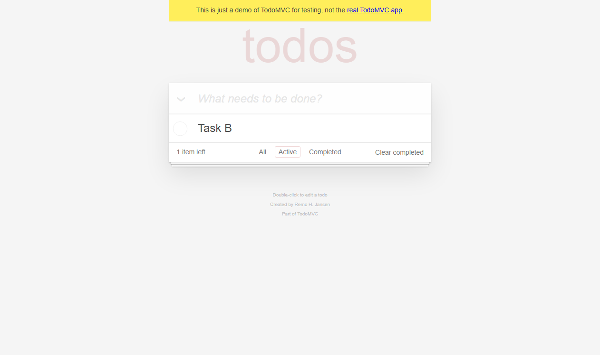
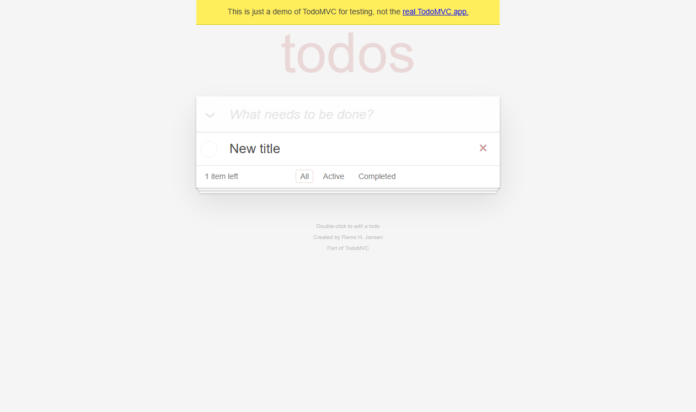
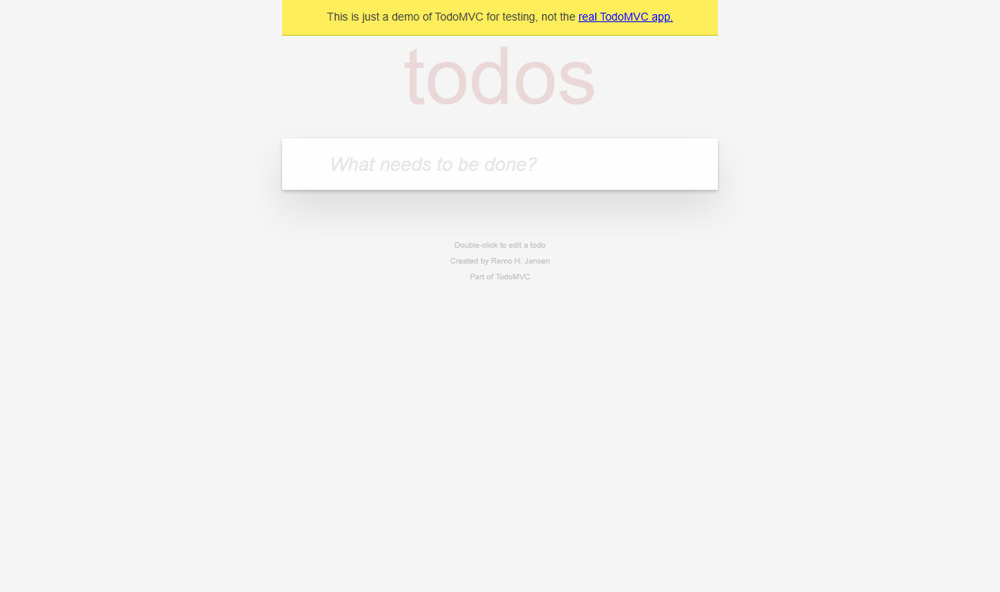
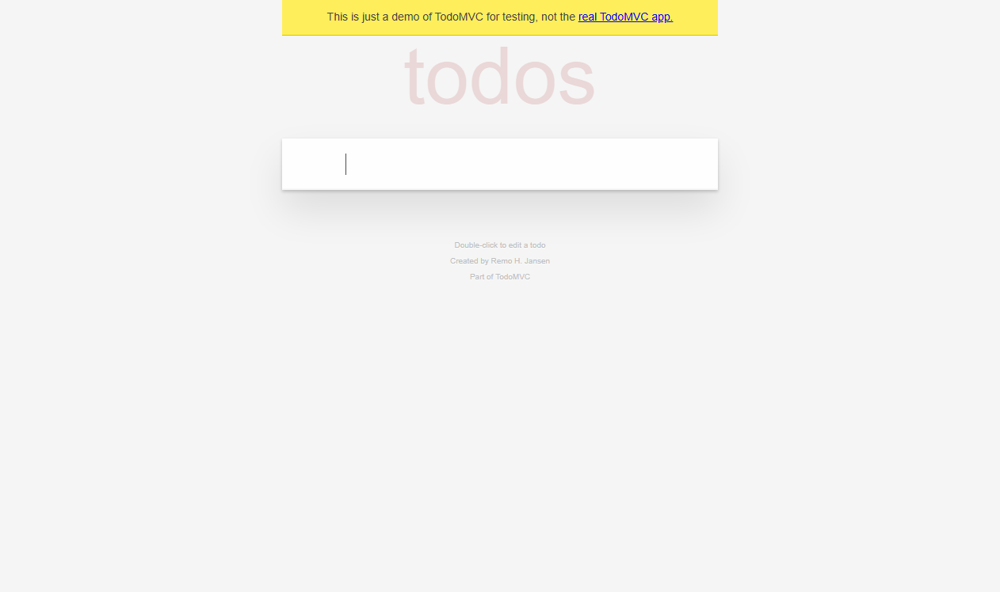
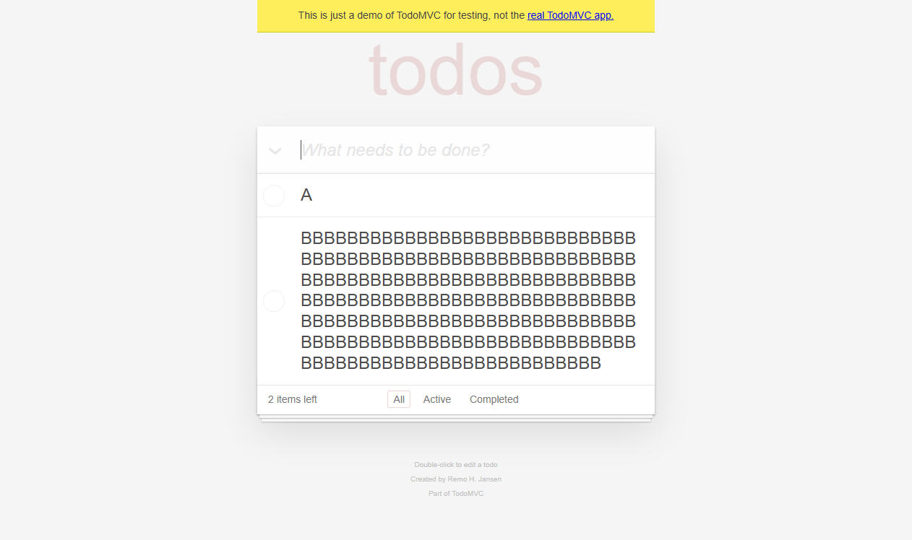
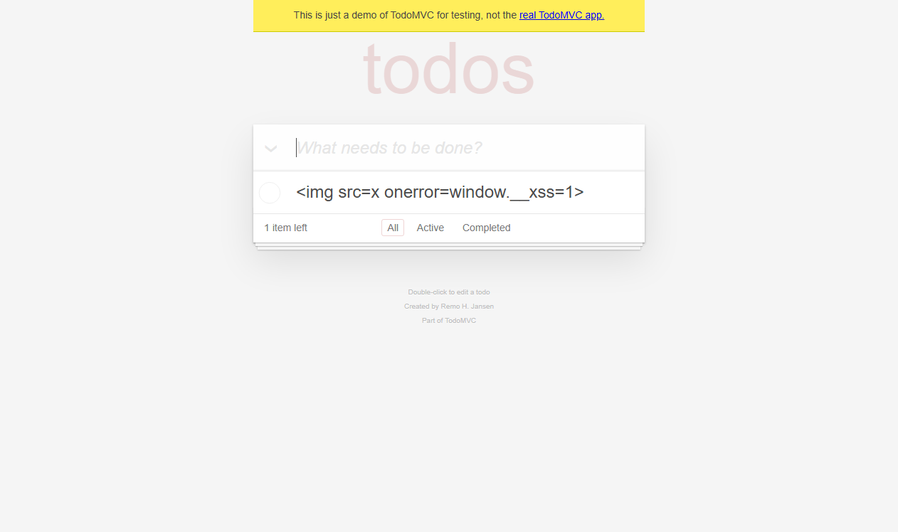
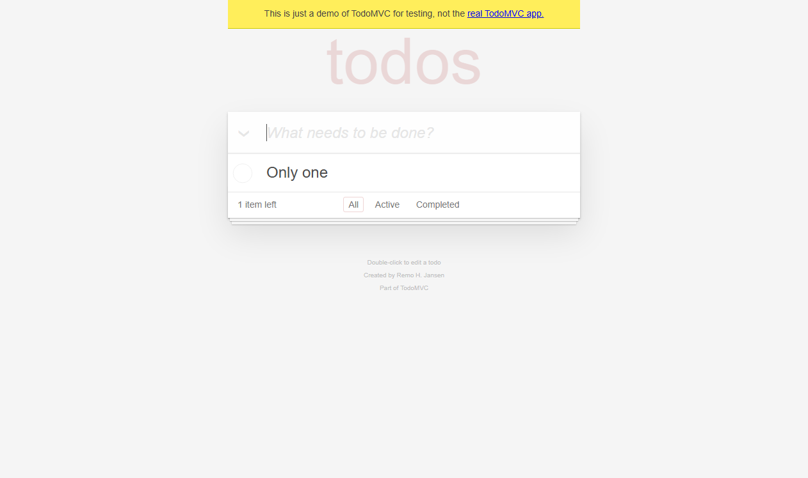

evidence/raw/RUN-AUDIT-20261030-02/TC-TODO-001/TC-TODO-001__case__element__20261030T094821-351.png生成时间：2026-10-30T17:48:32+08:00
运行 ID：RUN-AUDIT-20261030-02
目标：https://demo.playwright.dev/todomvc
状态：通过
验证 https://demo.playwright.dev/todomvc 的核心交互、输入边界、状态过滤与失败取证链路。仅陈述本机实际执行且可追溯的结果。
| 项目 | 值 |
|---|---|
| python | 3.13.9 |
| platform | Windows-11-10.0.26340-SP0 |
| pytest | pytest |
| target | https://demo.playwright.dev/todomvc |
| 用例 ID | 标题 | 状态 | 证据数 | 日志 |
|---|---|---|---|---|
| TC-TODO-001 | 新增一条待办 | 通过 | 3 | evidence/logs/RUN-AUDIT-20261030-02/TC-TODO-001.log |
| TC-TODO-002 | 完成待办并按状态过滤 | 通过 | 2 | evidence/logs/RUN-AUDIT-20261030-02/TC-TODO-002.log |
| TC-TODO-003 | 编辑待办标题 | 通过 | 1 | evidence/logs/RUN-AUDIT-20261030-02/TC-TODO-003.log |
| TC-TODO-004 | 删除待办 | 通过 | 2 | evidence/logs/RUN-AUDIT-20261030-02/TC-TODO-004.log |
| TC-TODO-005 | 空与纯空白输入被拒绝 | 通过 | 1 | evidence/logs/RUN-AUDIT-20261030-02/TC-TODO-005.log |
| TC-TODO-006 | 输入长度边界 | 通过 | 1 | evidence/logs/RUN-AUDIT-20261030-02/TC-TODO-006.log |
| TC-TODO-007 | HTML/脚本文本被转义 | 通过 | 1 | evidence/logs/RUN-AUDIT-20261030-02/TC-TODO-007.log |
| TC-TODO-099 | 受控失败断言 | 受控预期失败 | 4 | evidence/logs/RUN-AUDIT-20261030-02/TC-TODO-099.log |
状态：通过
预期：True
实际：断言通过
日志：evidence/logs/RUN-AUDIT-20261030-02/TC-TODO-001.log
| # | 断言 | 预期 | 实际 | 结果 |
|---|---|---|---|---|
| 1 | 待办列表包含新增项 | ['Buy milk'] | ['Buy milk'] | 通过 |
| 2 | 剩余计数为 1 | 1 item left | 1 item left | 通过 |
| 3 | 底部状态栏可见 | True | True | 通过 |
evidence/raw/RUN-AUDIT-20261030-02/TC-TODO-001/TC-TODO-001__case__element__20261030T094821-351.pngevidence/raw/RUN-AUDIT-20261030-02/TC-TODO-001/TC-TODO-001__case__fullpage__20261030T094821-450.png
evidence/raw/RUN-AUDIT-20261030-02/TC-TODO-001/TC-TODO-001__final__viewport__20261030T094821-526.png状态：通过
预期：['Task B']
实际：断言通过
日志：evidence/logs/RUN-AUDIT-20261030-02/TC-TODO-002.log
| # | 断言 | 预期 | 实际 | 结果 |
|---|---|---|---|---|
| 1 | 完成后剩余计数为 1 | 1 item left | 1 item left | 通过 |
| 2 | Completed 仅显示已完成项 | ['Task A'] | ['Task A'] | 通过 |
| 3 | Active 仅显示未完成项 | ['Task B'] | ['Task B'] | 通过 |

evidence/raw/RUN-AUDIT-20261030-02/TC-TODO-002/TC-TODO-002__Active__fullpage__20261030T094822-312.png
evidence/raw/RUN-AUDIT-20261030-02/TC-TODO-002/TC-TODO-002__final__viewport__20261030T094822-393.png状态：通过
预期：['New title']
实际：断言通过
日志：evidence/logs/RUN-AUDIT-20261030-02/TC-TODO-003.log
| # | 断言 | 预期 | 实际 | 结果 |
|---|---|---|---|---|
| 1 | 标题被更新 | ['New title'] | ['New title'] | 通过 |

evidence/raw/RUN-AUDIT-20261030-02/TC-TODO-003/TC-TODO-003__final__viewport__20261030T094823-181.png状态：通过
预期：False
实际：断言通过
日志：evidence/logs/RUN-AUDIT-20261030-02/TC-TODO-004.log
| # | 断言 | 预期 | 实际 | 结果 |
|---|---|---|---|---|
| 1 | 列表被清空 | [] | [] | 通过 |
| 2 | 无待办时底部状态栏隐藏 | False | False | 通过 |

evidence/raw/RUN-AUDIT-20261030-02/TC-TODO-004/TC-TODO-004__case__fullpage__20261030T094823-950.png
evidence/raw/RUN-AUDIT-20261030-02/TC-TODO-004/TC-TODO-004__final__viewport__20261030T094824-029.png状态：通过
预期：[]
实际：断言通过
日志：evidence/logs/RUN-AUDIT-20261030-02/TC-TODO-005.log
| # | 断言 | 预期 | 实际 | 结果 |
|---|---|---|---|---|
| 1 | 空输入不新增待办 | [] | [] | 通过 |
| 2 | 纯空白输入不新增待办 | [] | [] | 通过 |

evidence/raw/RUN-AUDIT-20261030-02/TC-TODO-005/TC-TODO-005__final__viewport__20261030T094824-528.png状态：通过
预期：['A', 'BBBBBBBBBBBBBBBBBBBBBBBBBBBBBBBBBBBBBBBBBBBBBBBBBBBBBBBBBBBBBBBBBBBBBBBBBBBBBBBBBBBBBBBBBBBBBBBBBBBBBBBBBBBBBBBBBBBBBBBBBBBBBBBBBBBBBBBBBBBBBBBBBBBBBBBBBBBBBBBBBBBBBBBBBBBBBBBBBBBBBBBBBBBBBBBBBBBBBBBB']
实际：断言通过
日志：evidence/logs/RUN-AUDIT-20261030-02/TC-TODO-006.log
| # | 断言 | 预期 | 实际 | 结果 |
|---|---|---|---|---|
| 1 | 1 字符边界被接受 | ['A'] | ['A'] | 通过 |
| 2 | 200 字符输入被完整保存 | ['A', 'BBBBBBBBBBBBBBBBBBBBBBBBBBBBBBBBBBBBBBBBBBBBBBBBBBBBBBBBBBBBBBBBBBBBBBBBBBBBBBBBBBBBBBBBBBBBBBBBBBBBBBBBBBBBBBBBBBBBBBBBBBBBBBBBBBBBBBBBBBBBBBBBBBBBBBBBBBBBBBBBBBBBBBBBBBBBBBBBBBBBBBBBBBBBBBBBBBBBBBBB'] | ['A', 'BBBBBBBBBBBBBBBBBBBBBBBBBBBBBBBBBBBBBBBBBBBBBBBBBBBBBBBBBBBBBBBBBBBBBBBBBBBBBBBBBBBBBBBBBBBBBBBBBBBBBBBBBBBBBBBBBBBBBBBBBBBBBBBBBBBBBBBBBBBBBBBBBBBBBBBBBBBBBBBBBBBBBBBBBBBBBBBBBBBBBBBBBBBBBBBBBBBBBBBB'] | 通过 |

evidence/raw/RUN-AUDIT-20261030-02/TC-TODO-006/TC-TODO-006__final__viewport__20261030T094825-153.png状态：通过
预期：None
实际：断言通过
日志：evidence/logs/RUN-AUDIT-20261030-02/TC-TODO-007.log
| # | 断言 | 预期 | 实际 | 结果 |
|---|---|---|---|---|
| 1 | HTML 文本按纯文本展示 | ['<img src=x onerror=window.__xss=1>'] | ['<img src=x onerror=window.__xss=1>'] | 通过 |
| 2 | 未执行注入脚本 | None | None | 通过 |

evidence/raw/RUN-AUDIT-20261030-02/TC-TODO-007/TC-TODO-007__final__viewport__20261030T094825-612.png状态：受控预期失败
预期：2 items left
实际：tests\test_todomvc_expected_failure.py:22: in test_expected_failure_captures_evidence
case_ctx.check(page.count_text().startswith("2"), "受控失败断言", "2 items left", page.count_text())
tests\conftest.py:309: in check
raise AssertionError(f"{name}: expected={expected!r} actual={actual!r}")
E AssertionError: 受控失败断言: expected='2 items left' actual='1 item left'
日志：evidence/logs/RUN-AUDIT-20261030-02/TC-TODO-099.log
| # | 断言 | 预期 | 实际 | 结果 |
|---|---|---|---|---|
| 1 | 受控失败断言 | 2 items left | 1 item left | 失败 |

evidence/raw/RUN-AUDIT-20261030-02/TC-TODO-099/TC-TODO-099__failure__viewport__20261030T094826-504.png
evidence/raw/RUN-AUDIT-20261030-02/TC-TODO-099/TC-TODO-099__failure__fullpage__20261030T094826-504.png未登记产品缺陷。若有 xfailed 用例，它只用于验证失败取证链路，不等同于产品缺陷。
本轮未生成差异图；有效截图证据见第 4 节。
已登记 15，校验通过 15；缺失 0；哈希不一致 0。
JUnit：
控制台：
tests=8 failures=0 errors=0 xfailed=1
本轮功能用例全部通过；受控预期失败用例已按预期捕获并保留证据。
像素差异不等同于产品缺陷；未执行场景不会标记为通过；比赛前需确认 AI 工具合规要求。